Witam, posiadam do sprzedania Ford Explorer XLT 2,3 ecoboost o mocy 300KM i napędem 4x4 z 2020 roku.
Auto sprowadzone z USA, zarejestrowane, bogato wyposażone, w bardzo dobrym stanie technicznym. Wnętrze czyste, zadbane, wszystkie elementy wyposażenia są sprawne. Było uszkodzone i jest po naprawie blacharsko lakierniczej w Polsce. Po wykonanej naprawie samochód przeszedł gruntowny przegląd techniczny i wykonany został serwis olejowy tj.wymiana oleju w silniku i skrzyni biegów oraz kpl. filtrów, konieczna była również wymiana opon - założone nowe wielosezonowe marki Vredestein. Nie stwierdzono konieczności wykonywania żadnych innych napraw i/lub wymiany części. Auto jest w 100% sprawne i przygotowane do dalszej eksploatacji.
Wyposażenie m.in.:
*) Skórzana tapicerka
*) Trzystrefowa klimatyzacja automatyczna
*) Szyberdach panoramiczny elektryczny
*) Fotele podgrzewane, elektrycznie regulowane z pamięcią
*) Kamera
*) Systemy bezpieczeństwa: asystent pasa ruchu, martwego pola, rozpoznawanie znaków, aktywny tempomat, systemy awaryjnego hamowania
*) Adaptacyjne światła LED, światła dzienne LED, czujnik deszczu
*) System nagłośnienia, nawigacja, Android Auto, Bluetooth
*) Elektrycznie składane i podgrzewane lusterka
*) Elektryczna klapa bagażnika
*) Felgi aluminiowe 20"
*) Przyciemniane szyby tylne
Nr. VIN. 1FMSK8DH9LGA59945.
Na wszystkie pytania chętnie odpowiem telefonicznie lub podczas oględzin (nie odpowiadam na wiadomości tekstowe). Historię auta proszę również weryfikować na podstawie nr. VIN, na życzenie udostępnię zdjęcia samochodu przed naprawą. Sprzedaż prywatna na podstawie umowy kupna- sprzedaży. Pozdrawiam
Wszystkie informacje zawarte w tym ogłoszeniu należy potwierdzić u sprzedawcy.
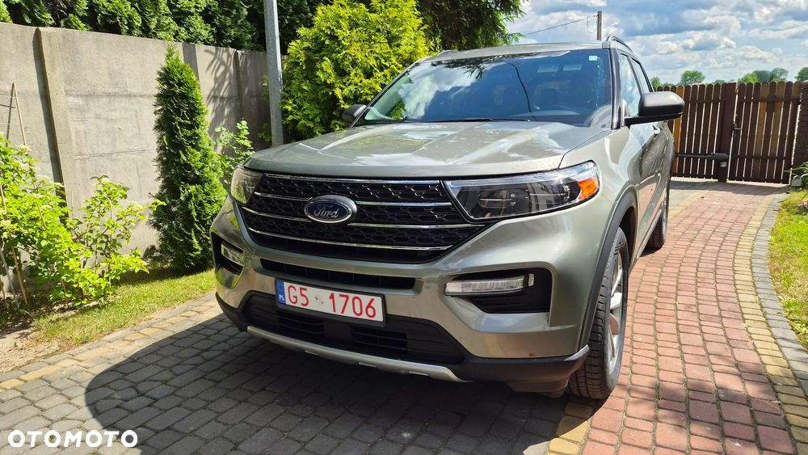
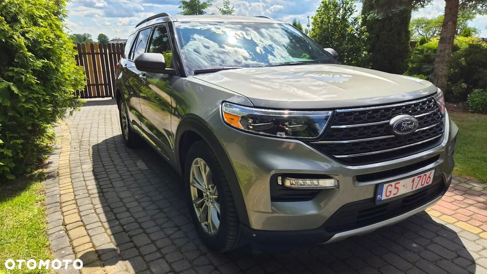
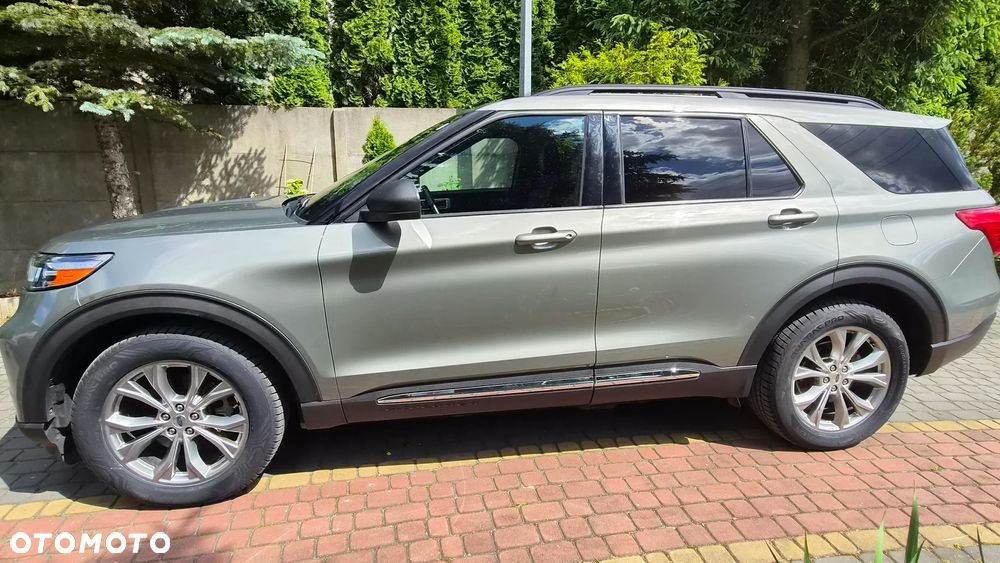
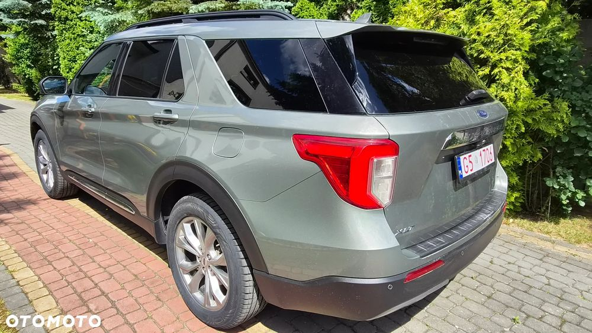
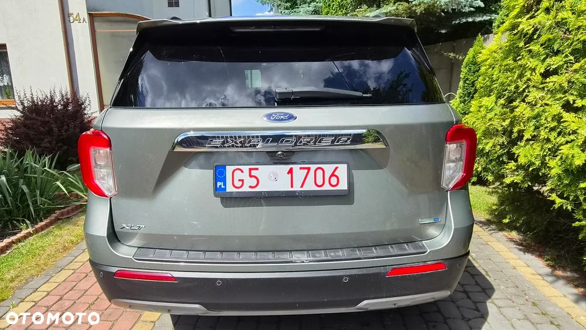
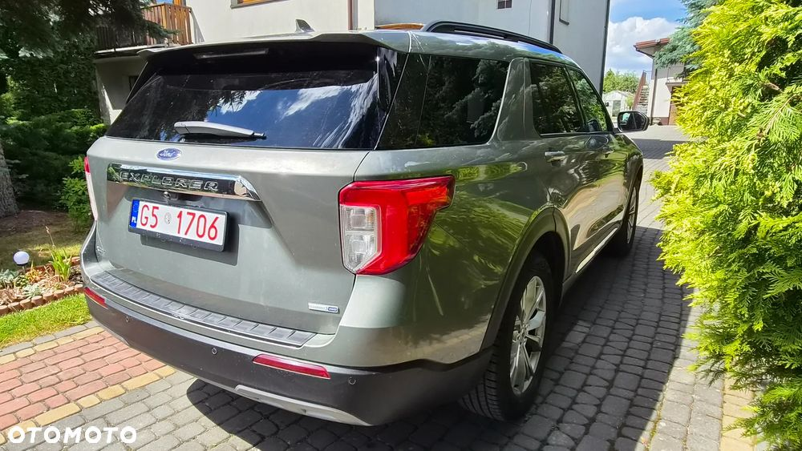
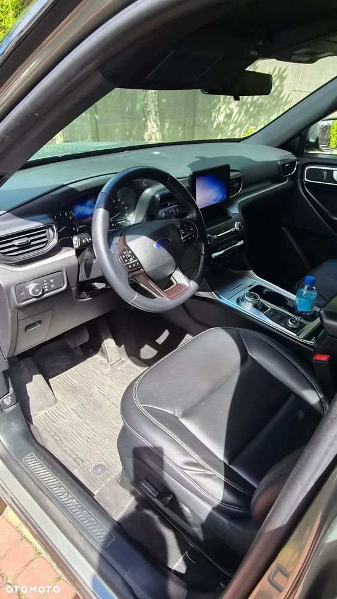
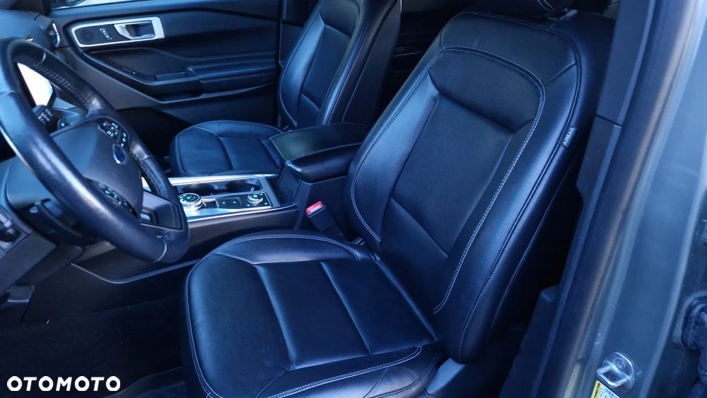
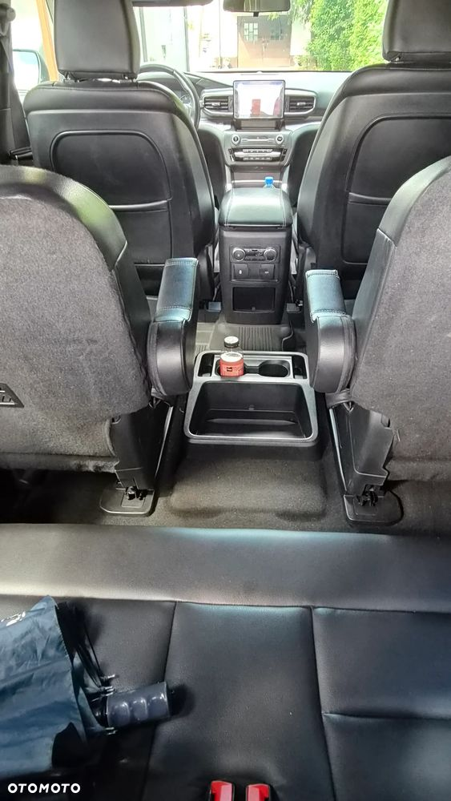
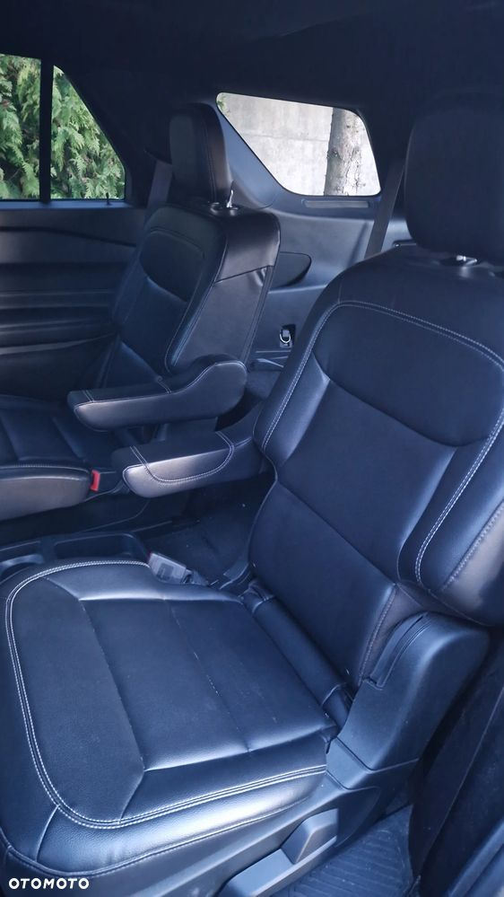
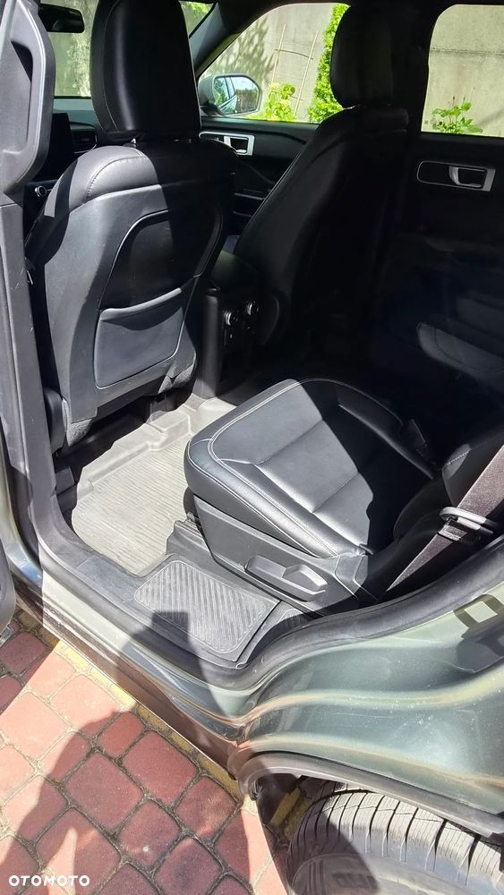
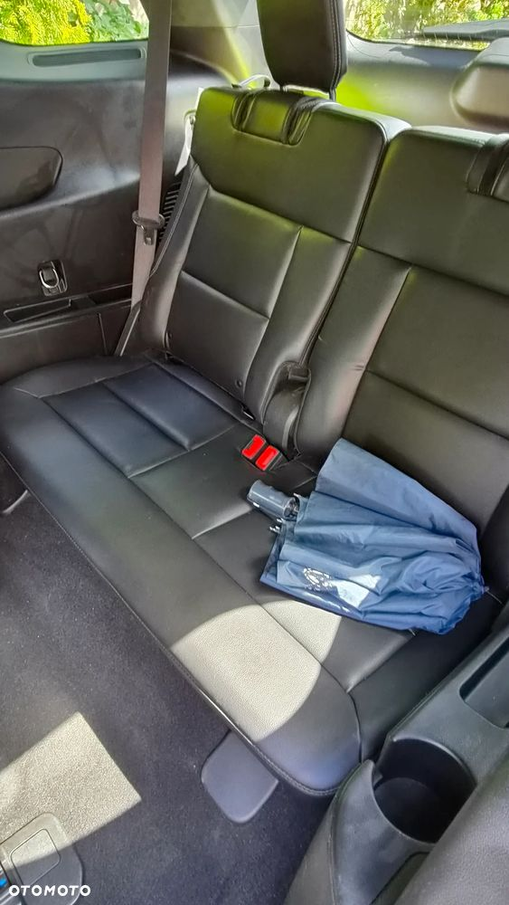
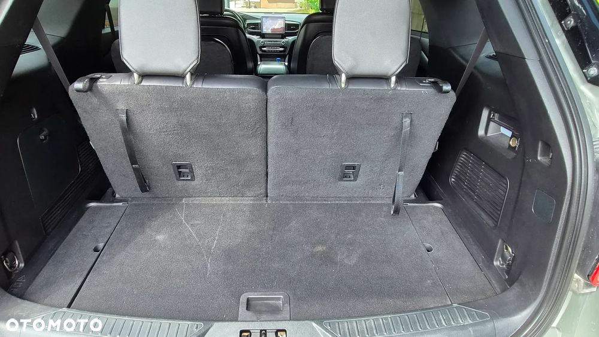
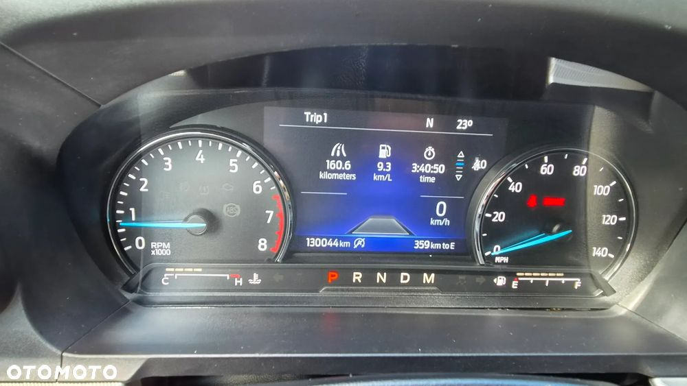
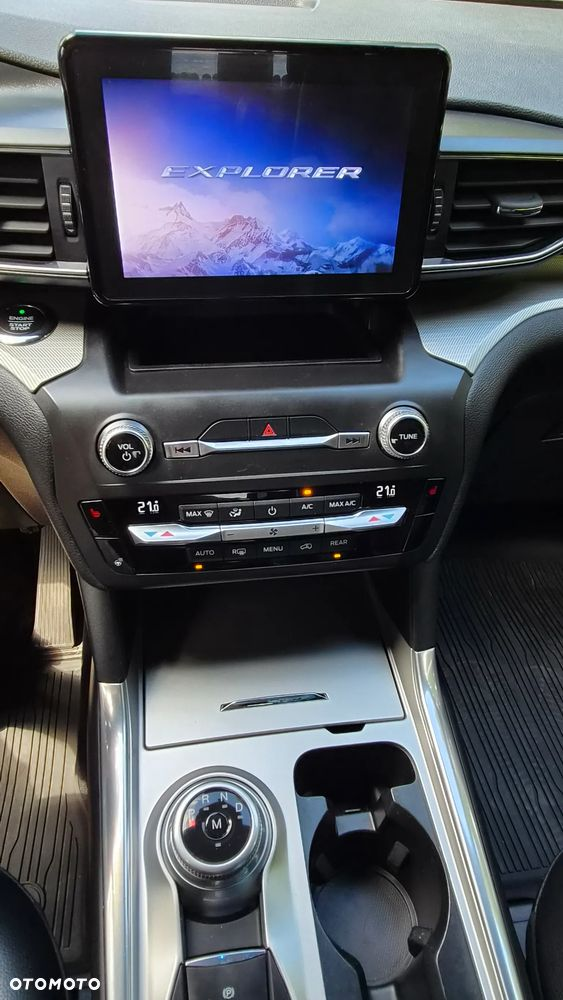
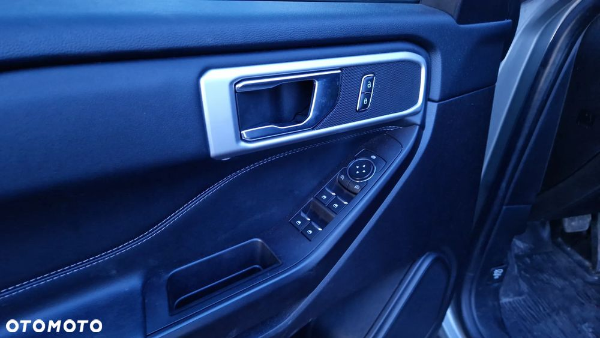